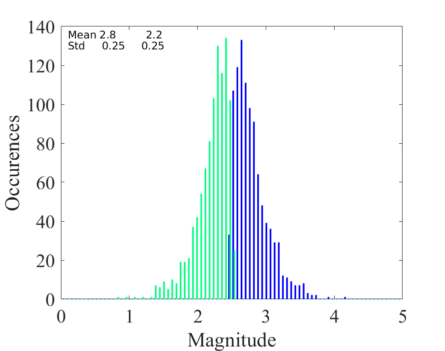

Analysis of evaluation results
Contents
6.4. Analysis of evaluation results¶
To determine the quality and performance of speech processing methods, we often use subjective and objective evaluation methods. These methods however give an array of results, one result for each sound sample for objective methods, and in the case of subjective listening tests, one result for each sounds sample per listener. Invariably, the results are noisy in the sense that each sound sample and each listener will give a different result. How do we then determine whether one method is better than the other? In short, we have to perform statistical analysis of results. The types of question we can answer with statistical analysis include: “Based on measurement results, which result is most probable, that A is better than B, that B is better than A, or is it impossible to determine?”
6.4.1. Informal analysis¶
In practical laboratory work, after an experiment, you would always like to get a first impression of the results as quickly as possible. With informal analysis, we here refer to quick-and-dirty evaluation of data to determine whether there it is worth investing time in a more formal analysis. That is, if we already in the informal analysis determine that our new method is not really better than past methods, then it more productive to improve the method rather than perform a detailed analysis of results. On the other hand, a detailed analysis can sometimes reveal effects which are not visible in informal analysis and which could be used to improve the method in question. In any case, when reporting results (in a publication or even just to your superior), informal analysis should never replace properly applied statistical tests. Informal tests just given an indication of how much work will be required for proper tests.
6.4.1.1. Example 1¶
Suppose we want to compare methods A and B, and we have already applied PESQ on the outputs of both methods for 100 speech samples. How do we know if A is better than B?
First idea: Calculate the mean and standard deviation of both measurements. Which method has a higher (better) mean? Is the standard deviation clearly smaller than the difference in means?
Suppose the mean of PESQ scores for A and B are 4.5 and 3.1, and their corresponding standard deviations are 0.2 and 0.15. Clearly A has a higher (better) PESQ score than B. The standard deviations are small which indicates that the measurement rarely diverge far from the mean. This is the best case scenario but unfortunately it happens rarely in practice.
Suppose the mean of PESQ scores for A and B are 3.5 and 3.1, and their corresponding standard deviations are 0.2 and 0.15. Clearly the mean PESQ score is higher (better) for A than B. In this case it is however not immediately clear whether we can draw any definite conclusions. Is the difference significant? The standard deviations are not much smaller than the difference between the means, indicating that sometimes A could be worse than B! Further analysis is required.
Note that here we have chosen to discuss the standard deviations, although we could equivalently present the variances of measurements. The benefit of the standard deviation is that it is expressed in the same units as the mean, such that we can directly get an intuitive impression of the magnitude of the differences in means in comparison to the standard deviations.
6.4.1.2. Informative illustrations 1¶
6.4.1.2.1. Histograms¶
By plotting the histograms of two measurements, we can study the distribution of measurements. For example in Histogram 1 on the right, we can see two distributions (blue and green), whose means are 2.8 and 2.2. We can clearly see that the means of the sample are different, but it is not immediately clear whether that is just a random coincidence or if this is statistically significant. In Histogram 2 on the right, we see a much clearer difference. Though the means are the same, 2.8 and 2.2, the standard deviations are now smaller 0.25 instead of 1.0, such that we can be fairly confident that the difference in means is significant.In Histogram 3, there is not doubt left, the distributions are not overlapping and a statistical test would for sure show a significant difference.
If we then compare histograms 2 and 4, we see that they have the same means and standard deviations. However, while from histogram 2 we might not be entirely certain that the difference is significant, in histogram 4 the amount of overlap is much reduced because the distributions are skewed. Therefore already in informal analysis, we can be rather confident that there is a significant difference in distributions. This example thus demonstrates that the histograms can reveal properties of the measurements which cannot be captured by the mean and standard deviation.
A further example which demonstrates how some differences are not captured by the mean and standard deviation is illustrated in Histogram 5. Here both measurements have the same mean, which could give the impression that both measurements are “the same”. However, by looking at the histogram, we find that the blue curve actually has two peaks, one clearly lower and another higher than the green curve. Further analysis is thus needed to determine the cause for the strange distribution. Typically, for example, some methods behave differently for different inputs. A speech enhancement method could be for example be effective for voiced sounds, but fail for unvoiced sounds, such that the output SNR has two peaks corresponding to respective classes of sounds.
These two last examples, Histograms 4 and 5, illustrate why it is in general important to test whether evaluation results follow a Gaussian (normal) distribution. Analysis of approximately Gaussian results is less complicated then the analysis of skewed and multi-modal distributions. However, applying methods which assume Gaussian distributions on data which does not follow Gaussian distributions will often lead to incorrect conclusions.
Histogram 1: Large overlap between distributions A (blue) and B (green)

Histogram 3: Very small overlap between distributions

Histogram 5: Bimodal distribution for A, that is, the blue curve has two peaks.

Histogram 2: Smaller overlap between distributions
 Histogram 4: Skewed distributions such that overlap is smaller than
standard deviation would indicate
Histogram 4: Skewed distributions such that overlap is smaller than
standard deviation would indicate

6.4.1.2.2. Scatter plots¶
A useful tool for determining whether there are in hidden structures between the results of two methods is to plot a scatter plot of the results, where we plot dots (or other symbols) in a graph whose x- and y- axis correspond to the evaluation results of two methods. Scatter plots 1-3 on the right illustrate different typical scenarios. Plot 1 shows measurements in a circular area, indicating that the measurements are uncorrelated. In speech and audio experiments this is highly unusual. Scatter plot 2 is much more common, where measurements form a tight band. This means that measurements are correlated. For example, in a speech coding scenario, it could be that some speech samples are easy to encode with high quality, such that methods A and B both give high scores. Our objective is however to determine whether A or B is better, and therefore we want to cancel out the effect of these correlations. We can then take the difference between A and B to get the relative quality of the two methods (see histogram on the right).
Another typical scenario is illustrated in Scatter plot 3, where the scatter plot seems to form two distinctive groups. This would indicate that there are some underlying categories in the data (such as male/female, voiced/unvoiced, speech/silence) where performance is different. Typically we would then like to find out what the categories to determine if we can improve performance based on that information. For example, if performance is bad for unvoiced sounds, we could have a detector for unvoiced sounds, and perform different processing for such sounds. See also section “Parallel plots” below.
Scatter plot 1: Two uncorrelated measurements A and B.

Scatter plot 3: Two somewhat separate groups with different means and correlations.

Scatter plot 2 illustrating two measurements with slightly differing means but high correlation (measurements form a tight group). In such a case, the difference between the two measurements can often be very informative, illustrated in the histogram below. We see that the mean difference is 0.6 with a standard deviation of 0.21 and that the distribution is clearly separated from 0 (=clearly separated from the null-hypothesis “no difference between A and B”).


6.4.1.2.3. Box plots¶
For comparison of distributions of several different measurements, we often use box-plots (see Figure on the right). Here we have the sound samples on x-axis (here called “Items”) and the improvement in POLQA scores on the y-axis (for more about delta scores, see section “Delta” below). The red line in the midle represent the median of all scores, the blue box contains 50% of all measurements and the black horizontal lines indicate the largest and lowest scores. In other words, each quartile which contains 25% of measurements, is indicated by an interval. An exception are outliers, that is, those measurements which are deemed exceptional in some sense, are marked with red plus-signs. Note that the choice of outliers is an sensitive issue; you cannot just choose which values are exceptional, but have to apply formal methods (it is an advanced topic which is not discussed here).
Note that box-plots are visualization methods and cannot be used alone to make conclusions about statistical significance. Instead, they valuable for descriptive analysis of results. For example in the figure on the right, female and male speakers are the three items on the left and right, respectively. Clearly we get an impression that the delta scores of the female speakers are higher than those of male speakers. However, the distributions are overlapping to such an extent that we would need proper statistical analysis to determine how likely it is that this is not just a coincidence.
In any case, box plots are useful in illustration of for example MUSHRA, POLQA and PESQ scores as well as their delta scores. Box plots contain less information than the corresponding histograms, but that omission reduces clutter; We can easily display 20 items side by side with a box-plot, whereas histograms of 20 items would be a mess.

Image by Sneha Das (with permission)
6.4.1.2.4. Confusion matrix¶
A confusion matrix is the equivalent of a scatter plot for categorical data, often either expressed in a table format or visualized as the as a heat-map. For example, suppose you have a classifier whose objective is to classify between speech, music and background noise. For each testing sample, you then have the target output and the actual output of your classifier, which you can write as a matrix such as:
Actual music |
Actual speech |
Actual noise |
|
|---|---|---|---|
Predicted music |
78 |
2 |
13 |
*Predicted speech |
3 |
77 |
5 |
Predicted noise |
22 |
18 |
83 |
Often the largest value in each column is identified by bold-face. In this toy example, all classes are usually predicted correctly, which means that for each actual label, the most often predicted label matches the actual label. That is, music is most often classified as music (78 times), but also quite often as noise (22 times). Similarly, speech is classified most often as speech (77 times) but also often as noise (18 times). Noise, on the other hand, is rarely classified as speech (5 times) and almost always correctly as noise (83 times).
If the number of labels is large, then it is often useful to plot the matrix as a heat-map.
6.4.1.3. Example 2¶
Suppose we want to compare methods A and B, and we have already calculated the frame-wise SNR on the outputs of both methods for a range of speech samples. We have also already calculated means and standard deviations and plotted histograms and scatter plots. The only we have found that there seems to be distinct categories of results indicated by a bimodal or multi-modal (multipeak) distribution of SNRs.
How do we know if A is better than B? How does behaviour of A differ from B? How do we characterize the differences between A and B?
First idea: In the previous example we already demonstrated the usefulness of illustrations. One of the all-time favourite illustrations is to plot the original sound signal (or its spectrogram) side-by-side with the frame-by-frame measurement results.
6.4.1.4. Informative illustrations 2¶
6.4.1.4.1. Parallel plots¶
When doing frame-by-frame measurements such as SNR, we can plot results over time to see whether there are any particular structures in the results. Typically, for example, it could be that the SNR is high for some continuous sections and poor somewhere else. Such cases could be for example voiced and unvoiced sounds, where the speech processing method behaves differently. However, to determine which regions correspond to which types of speech, we can plot the waveform (or spectrogram) in parallel with the SNR.
As an example, consider the output of a trivial voice activity detector (VAD) illustrated on the right. The top-pane contains the original waveform, the second pane signal energy and the third pane the thresholded energy as VAD output. We can immediately see that the VAD output is correct when signal energy is high. However, in low-energy parts of the speech signal, VAD output oscillates between speech and non-speech, even if it would make sense that the whole segment (between 1.1 and 2.7s) would be labelled speech. In the fourth pane, we see a comparison of the raw/original, desired and post-processed output methods (the results are shifted vertically for better clarity).
In this way, parallel plots are very good for illustrating and characterizing performance of a system. We can easily relate properties of the speech signal with the outputs, such that we can describe which types of inputs give which types of outputs.

6.4.2. Statistical tests¶
DISCLAIMER: If you have not already, you should take a course in statistical analysis. There are plenty of good courses out there. In this short chapter we can only skim through some basic principles, which can not replace a thorough understanding of methods. Applying statistical tests without understanding them properly will regularly lead to incorrect conclusions.
6.4.2.1. Student’s t-test¶
When we want to determine if two normally distributed sets of values have the same mean, we use Student’s t-test. To be applicable, it is critical that the sets really do follow the Gaussian distribution (see “Normality tests” below). The t-test is intended for small data-sets, usually with less than 30 data-points and it is not meaningful for larger sets. Typical applications in speech and audio are:
Suppose we have made a MUSHRA-test, where we want to compare weather a new method B is better than the old method A. The mean of B is better (higher) than that of A, but how do we know if the result is statistically significant? First of all, we need to check that measurements follow the Gaussian distribution (see “Normality tests” below). If distributions are indeed Gaussian, we can apply the t-test. Given a threshold for significance (say 5%), the t-test gives an answer; either H=0, the difference between A and B is not significant or, H=1, that B is better than A.
Similarly, we can calculate the difference between A and B, and if the distribution is Gaussian, we can determine whether the difference to zero is statistically significant.
If the data sets are not normally distributed, it is often possible to use the Wilcoxon rank-sum test or the Wilcoxon signed-rank test instead.
6.4.2.2. Normality tests¶
Many statistical tests are only applicable when the input signal follows a Gaussian distribution. To test whether a distribution indeed is Gaussian, we use a normality test. The Shapiro-Wilk test is one particular test of normality, which is particularly reliable. The output of normality tests is that, given a particular level of confidence (such as 5%), the given data set is Gaussian.
6.4.2.3. ANOVA¶
When comparing multiple data sets at the same time, analysis of variance (ANOVA) can be interpreted as a generalization of the t-test. It tries to explain phenomenons in the data by assigning them to different sources of variation. Say if we observe differences between methods A and B, but know that some listeners have taken the test in the morning and others in the evening, we can analyse whether the difference is due to the the time of day or due to inherent differences in A and B.
Again it is important to observe the assumptions of this test; namely, the classical version of ANOVA assumes that prediction errors are normal, that measurements are independent and the assigned groups of data have uniform statistics.
6.4.2.4. Correlation tests¶
Often two data sets are correlated. For example, if we analyse the fundamental frequency and intensity of a speech signal, we probably find that shouted speech has a high intensity and fundamental frequency, whereas silent speech has low intensity and a low fundamental. To check whether two data sets indeed have a meaningful correlation, we use correlation tests. The two most common correlation tests are
Pearson correlation coefficient (PCC), which essentially fits a linear regression line through the data, such that we can then use the t-test to determine whether the thus-explained data is significantly different from the original. In other words, the Pearson correlation coefficient assumes a linear correlation between variables.
Spearman’s rank correlation coefficient analyses whether data can be explained by a monotonic function.